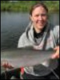

Chris Waigl: is pursuing a Ph.D. in Geophysics and for her research she uses remote sensing for investigating different aspects of forest fires in interior Alaska. More specifically, Chris is using, visible and infrared imagery from satellite and airborne platforms, to characterize wildfires in Alaska. Modeling fire behavior is also an integral component of her research. She is a recipient of the NASA Earth System Science Education Fellowship and her graduate advisory committee includes Martin Stuefer, Anupma Prakash, and Charles Ichoku. She can be reached at cwaigl@alaska.edu or at 907-4747809.
 Matthew Balazs: is an interdisciplinary Masters student who extensively uses remote sensing data and techniques, and simple data visualization tools for studying mass movement and associated land surface elevation changes as a result of climate-driven natural processes. High resolution elevation data from LiDAR and GPS are central to his research. Matthew is a student intern with the Alaska Division of Geological and Geophysical Surveys (DGGS) and is jointly supported by DGGS (mentor Dr. Gabriel Wolken) and the Geophysical Institute. Matthew can be reached at mbalazs@alaska.edu or at 907-4741164.
Matthew Balazs: is an interdisciplinary Masters student who extensively uses remote sensing data and techniques, and simple data visualization tools for studying mass movement and associated land surface elevation changes as a result of climate-driven natural processes. High resolution elevation data from LiDAR and GPS are central to his research. Matthew is a student intern with the Alaska Division of Geological and Geophysical Surveys (DGGS) and is jointly supported by DGGS (mentor Dr. Gabriel Wolken) and the Geophysical Institute. Matthew can be reached at mbalazs@alaska.edu or at 907-4741164.

Stephanie Meggers: is a Masters student in the School of Fisheries and Ocean Sciences. Her interest is in using remote sensing to study adult Chinook habitat in the Togiak watershed in south-west Alaska. She is looking for correlations between any specific habitat elements and the fish abundance as measured from fisheries field data that she has been collecting. Steph has also been talking to the local community members and elders who believe that there have been large swings in the abundance and distribution of the fish population in the study area. Steph is co-advised by Dr. Andrew Seitz and can be reached at slmeggers@alaska.edu
Josh Paul: is an Interdisciplinary Masters student studying permafrost soils and remote sensing. He is using a combination of multispectral satellite imagery and terrain derivatives to perform digital soil mapping of remote landscapes in Alaska. Josh is developing digital soil mapping techniques specific to permafrost soils and applying these techniques to a pilot study in Arctic Alaska along the Dalton Highway corridor. Derived maps will be validated with field data. His advisory committee includes Dr. Anupma Prakash and Dr. Chien-Lu Ping. Josh can be reached at jdpaul3@alaska.edu.
 Jacob Rosenthal: is pursuing a Masters degree in Geology. He is a structural geologist studying fracture intensities and the tectonic development of fractures in the middle and upper Jurassic strata of the Cook Inlet basin. The goal of his research is to outline a sequential deformation history for the region and to better understand what parameters control fracture density in sedimentary rocks. This research will help to ascertain the role that fractures play in the resource potential of the Cook Inlet forearc basin. Jacob is majorly advised by Dr. Elisabeth Nadin. He can be reached at jlrose09@yahoo.com.
Jacob Rosenthal: is pursuing a Masters degree in Geology. He is a structural geologist studying fracture intensities and the tectonic development of fractures in the middle and upper Jurassic strata of the Cook Inlet basin. The goal of his research is to outline a sequential deformation history for the region and to better understand what parameters control fracture density in sedimentary rocks. This research will help to ascertain the role that fractures play in the resource potential of the Cook Inlet forearc basin. Jacob is majorly advised by Dr. Elisabeth Nadin. He can be reached at jlrose09@yahoo.com.